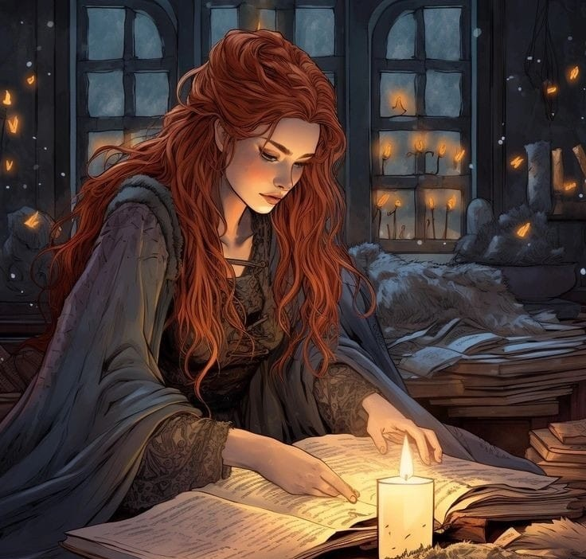

Sude J. Meridiante
KARAKTER HİKAYESİ

HAKKINDA
Yeteneğini kontrol etmeyi öğrendikten sonra Sude, kendisine ihanet eden ailesine ve onu kullanan krallığına büyük bir kin besler ve Mors Omnibus ekibine katılarak krallığı ele geçirmek ve daha adil, herkesin eşit olduğu bir toplum haline getirmek için güçlerini ve kalplerini birleştirirler.
GÜÇLERİ
Üstün fiziksellik
Kütüphane Alanı- Sonsuz bir kütüphane yaratır ve oranın efendisi olur. Bu kütüphanedeki hiçbir büyücü veya Datarius yeteneğini kullanamaz. Meridiante bu alanın içindeyken yazdığı her şey gerçek olur.
Scriptura- Latincede "yazı" kelimesinden türetilmiş olan bu yetenek, Meridiante'ye gerçek dünyada da yazdıklarını gerçekleştirme gücü verir. Ancak sonsuz kütüphanedekinin aksine gerçek dünyada daha sınırlıdır.
Zayıflıkları
Bu zamana dek vaktini kendi kütüphanesinde geçirdiği için dövüş tecrübesi neredeyse hiç yoktur. Bu nedenle öldürmekte, saldırı hayal etmekte tereddüt eder ve yavaş kalır.
Mental olarak kırılgandır.
Ani ve hızlı kararlar almakta ve hareket etmekte zorlanır. Daha çok akıllı davranmak ve uzun vadeli planlar yapmak onun için uygundur.
EKİP ARKADAŞLARI
Lucian White
Olivia Kourakin
Charles
Margarita
Kaiser Wllbeck
DÜŞMANLAR
Slyveria Hükümeti
Ailesi
EVREN VE IRKLAR
EVREN HAKKINDA BİLGİ ALMAK İÇİN ÜSTE TIKLA
MORS OMNİBUSA KATILARAK SEN DE MÜCADELEMİZDE BİZE EŞLİK EDEBİLİRSİN!
YAPMAN GEREKEN TEK ŞEY AŞAĞIDAKİ LİNKE TIKLAMAK VE BAŞVURU FORMUNU DOLDURMAK
KAHRAMANLIK ZAMANI